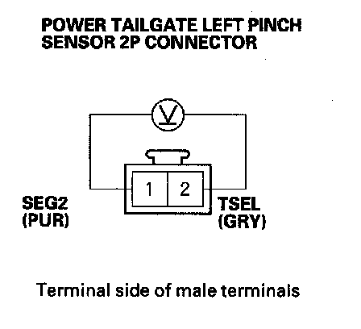
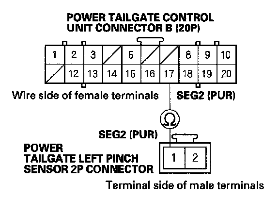

B1379
DTC B1379: Power Tailgate Left Pinch Sensor Circuit Malfunction1. Open the tailgate manually or with the keyless transmitter.
2. Close the tailgate with the keyless transmitter or driver's door power tailgate switch.
3. Turn the ignition switch OFF, and then back ON (II).
4. Clear the DTCs with the HDS.
5. Check for DTCs with the HDS.
Is DTC B1379 indicated?
YES - Go to step 6.
NO - Intermittent failure, the system is OK at this time. Check for loose or poor connections between the power tailgate control unit and the power tailgate left pinch sensor.
6. Turn the ignition switch OFF.
7. Disconnect the 2P connector from the power tailgate left pinch sensor.
8. Turn the ignition switch ON (II).

9. Measure the voltage between the harness side of the power tailgate left pinch sensor 2P connector No. 2 (+) and No. 1 ( - ) terminals.
Is there battery voltage?
YES - Replace the power tailgate left pinch sensor.
NO - Go to step 10.
10. Turn the ignition switch OFF.
11. Disconnect the power tailgate control unit connector B (20P).

12. Check for continuity between the power tailgate control unit connector B (20P) No. 16 terminal and the power tailgate left pinch sensor 2P connector No. 2 terminal.
Is there continuity?
YES - Go to step 13.
NO - Repair open in the wire.

13. Check for continuity between the power tailgate control unit connector B (20P) No. 17 terminal and the power tailgate left pinch sensor 2P connector No. 1 terminal.
Is there continuity?
YES - Replace the power tailgate control unit.
NO - Repair open in the wire.